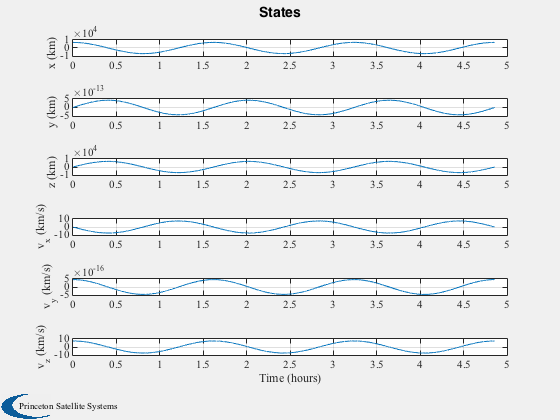
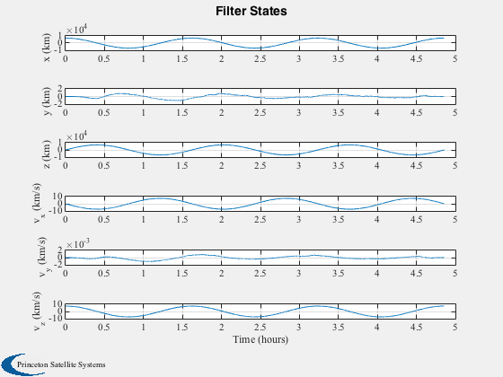
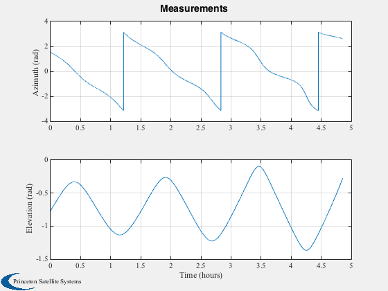
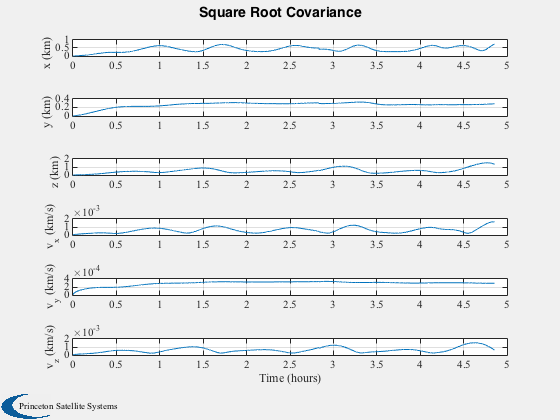

UKF orbit angles
Tracks a spacecraft using orbit angles from a ground station.
Things to try; 1. Add more ground stations 2. Try different orbits 3. Try different covariances and initial estimator states
-------------------------------------------------------------------------
Contents
------------------------------------------------------------------------- Copyright (c) 2015 Princeton Satellite Systems, Inc. All rights reserved. -------------------------------------------------------------------------
Initialize
-----------
degToRad = pi/180; dT = 2; sMA = 7000; p = Period(sMA); tEnd = 3*p; el = [sMA pi/2 0 0 0 0]; % Orbital elements lat = 40.3486111*degToRad; lon = 74.6594444*degToRad; alt = 0.062; % km dTelescope.eFToNEU = LatLonToNEU( lat, lon ); dTelescope.rGS = LatLonAltToEF( [lat;lon;alt] ); dTelescope.noise = [0.001;0.001]; % rad 1 sigma dOrbit.mu = 3.98600436e5; dOrbit.a = [0;0;0]; date = [2017 4 3 0 0 0]; dTelescopeZeroNoise = dTelescope; dTelescopeZeroNoise.noise = [0;0]; % Set the seed for the random number generators. % If the seed is not set each run will be different. %--------------------------------------------------- seed = 45198; rng(seed); n = ceil(tEnd/dT); % Satellite initial state %------------------- [r, v] = El2RV( el, [], dOrbit.mu );
Implement UKF
--------------
% Covariances %------------ r0 = diag(dTelescope.noise.^2); % Measurement 1-sigma q0 = [1e-6;1e-6;1e-6;1e-10;1e-10;1e-10]; % The baseline plant covariance diagonal p0 = [1e-3;1e-3;1e-3;1e-6;1e-6;1e-6].^2; % Initial state covariance matrix diagonal x = [r;v]; % Each step is one scan %---------------------- ukf = KFInitialize('ukf','f',@RHSEarthOrbitUKF,'alpha',2,... 'kappa',0,'beta',2,'dT',dT,'fData',dOrbit,... 'p',diag(p0),'q',diag(q0),'x',x, 'm',x); % Plotting arrays %---------------- yP = zeros(2,n); xP = zeros(6,n); pF = zeros(6,n); xF = zeros(6,n); t = (0:(n-1))*dT; jD = Date2JD(date) + t/86400; for k = 1:n dTelescope.jD = jD(k); dTelescopeZeroNoise.jD = jD(k); xP(:,k) = x; yP(:,k) = TelescopeUKF( x, dTelescope ); pF(:,k) = diag(ukf.p); xF(:,k) = ukf.m; % UKF Prediction step %-------------------- ukf.t = t(k); ukf = UKFPredict( ukf ); % UKF Update step %---------------- ukf.y.data = yP(:,k); ukf.y.param.hFun = @TelescopeUKF; ukf.y.param.hData = dTelescopeZeroNoise; ukf.y.param.r = r0; ukf = UKFUpdate( ukf ); % Integrate %---------- x = RK4(@RHSEarthOrbitUKF, x, dT, 0, dOrbit ); end
Plot
%------ [t, tL] = TimeLabl( t ); yM = {'Azimuth (rad)' 'Elevation (rad)'}; yL = {'x (km)', 'y (km)' 'z (km)', 'v_x (km/s)', 'v_y (km/s)' 'v_z (km/s)'}; Plot2D( t, xP, tL, yL, 'States' ); Plot2D( t, xF, tL, yL, 'Filter States' ); Plot2D( t, yP, tL, yM, 'Measurements' ); Plot2D( t, sqrt(pF), tL, yL, 'Square Root Covariance' ); %-------------------------------------- % PSS internal file version information %--------------------------------------   